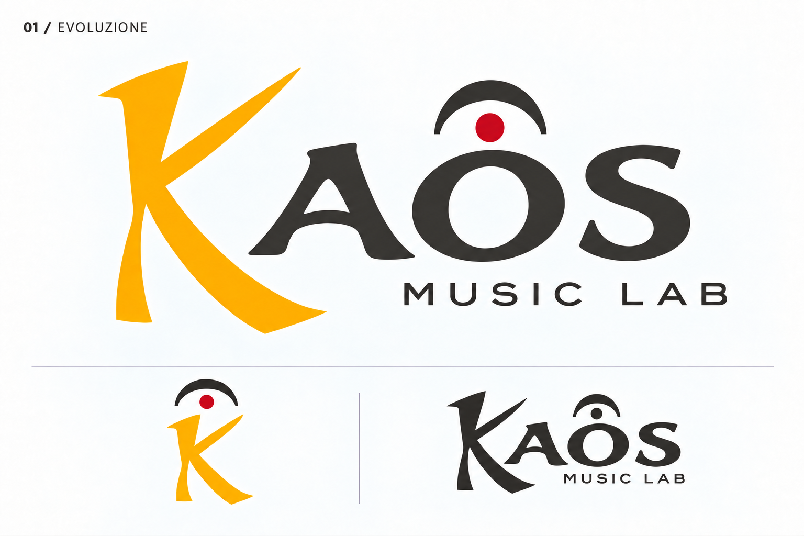
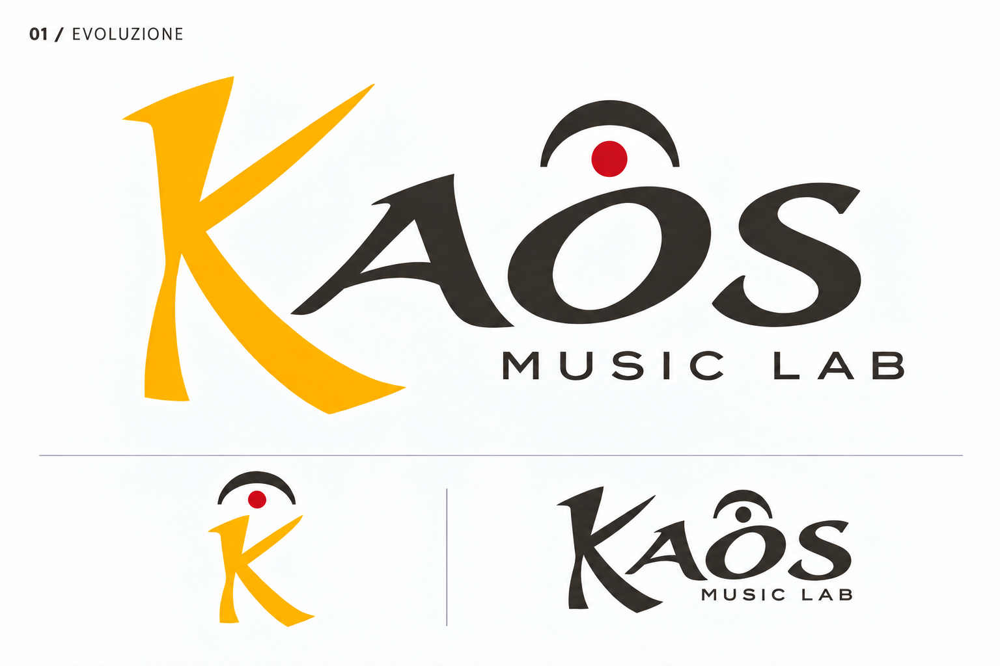
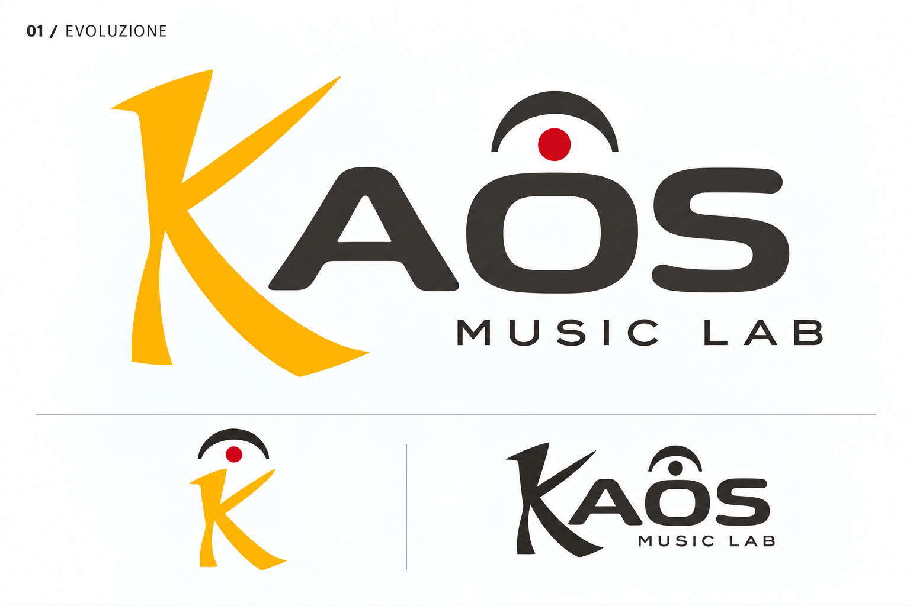
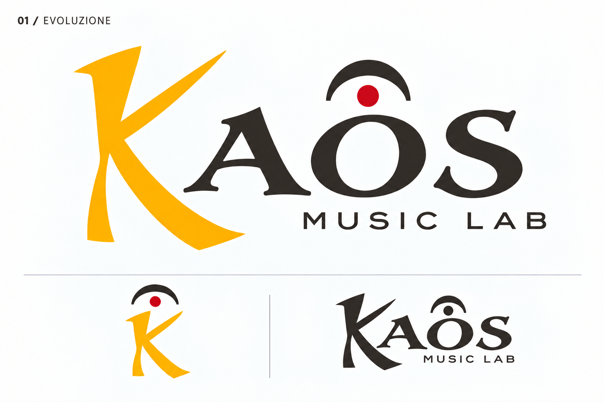

<!doctype html><html lang="it"><meta charset="utf-8"><meta name="viewport" content="width=device-width,initial-scale=1"><title>Kaos — Quattro alternative AOS</title><style>body{margin:0;background:#eee;color:#252525;font:18px system-ui}main{max-width:1200px;margin:auto;padding:24px}img{width:100%;display:block}section{margin:32px 0}a{color:inherit}</style><main><p><a href="../">← Presentazione principale</a></p><h1>Quattro alternative per AOS</h1><section><h2>A · Morbida</h2><a href="proposta-A.png"></a></section><section><h2>B · Calligrafica</h2><a href="proposta-B.png"></a></section><section><h2>C · Contemporanea</h2><a href="proposta-C.png"></a></section><section><h2>D · Classica</h2><a href="proposta-D.png"></a></section></main></html>